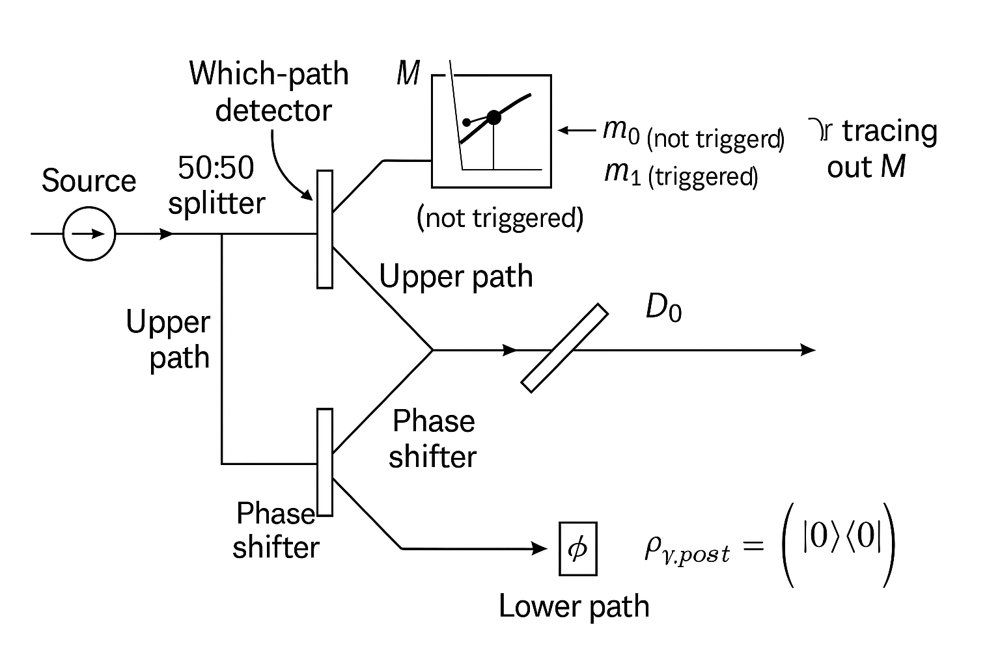
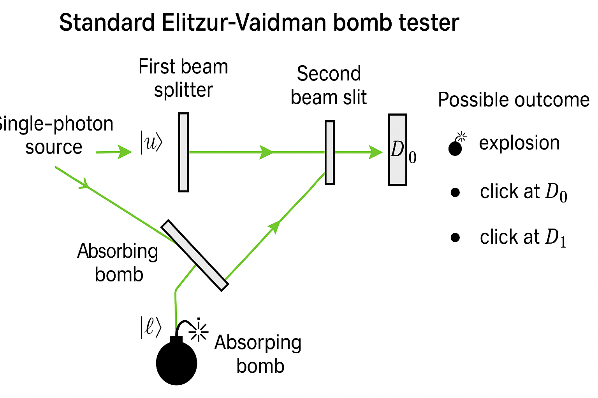
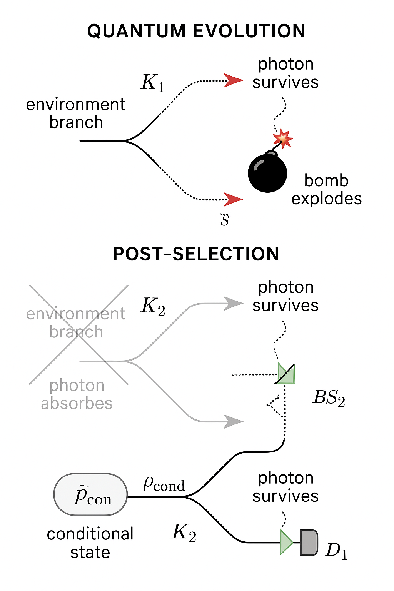
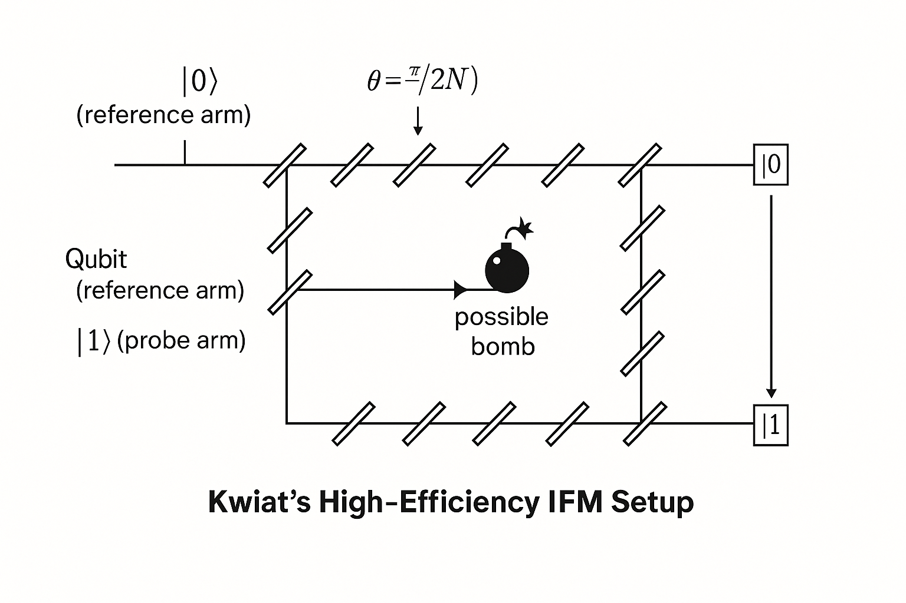
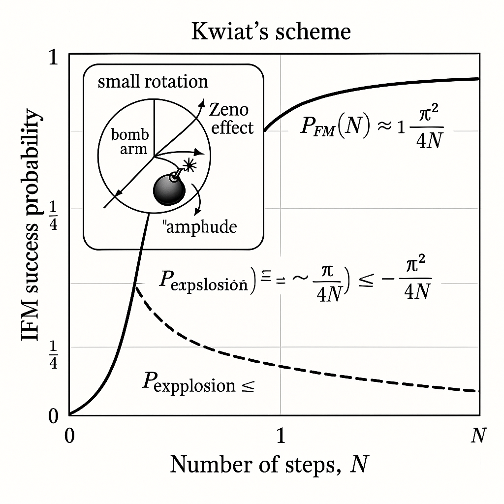
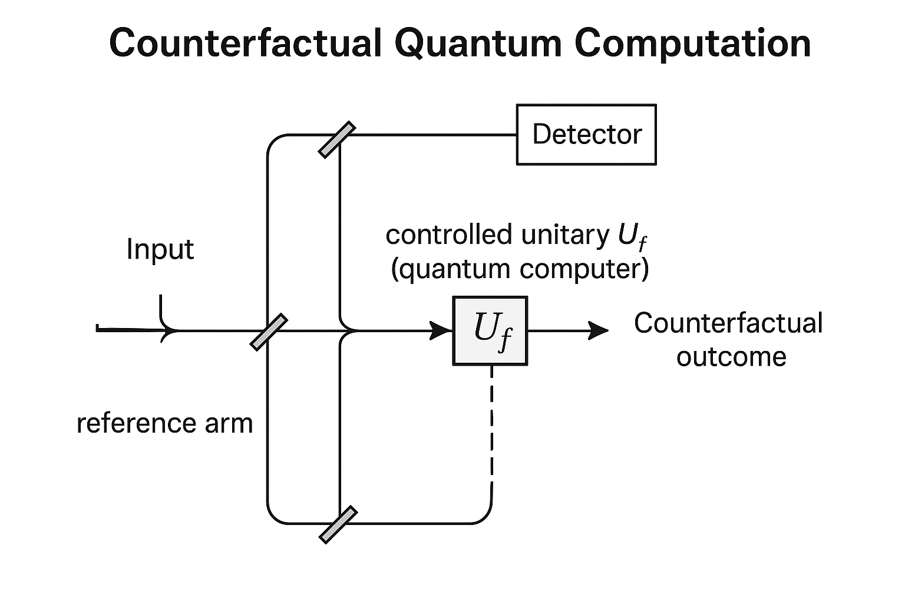

Generated by ChatGPT on 2025-12-16
逐字稿下載：ChatGPT_zh_L05_第_5_講_Decoherence主題_5.txt
完整音檔：
Segment 1:
Segment 2:
Segment 3:
Segment 4:
Segment 5:
Segment 6:
Segment 7:
Segment 8:
Segment 9:
Segment 10:
Segment 11:
本講我們聚焦於「互動自由測量（interaction-free measurements, IFM）」以及其著名範例 —— Elitzur–Vaidman 炸彈測試與 Kwiat 等人的強化版本，並將此與前幾講所建立的：
作嚴謹的連結。核心問題是：
在沒有「實際」發生散射（或吸收）事件的前提下，如何仍然能夠獲得關於系統的資訊？這是否違背了退相干與測量擾動的基本機制？
我們將看到答案是否定的：IFM 嚴格來說並非「完全沒有相互作用」，而是利用量子疊加與干涉，使得「崩塌通道」與「相干通道」之間呈現精巧的結構，使得：
從一個最基本的 Mach–Zehnder 干涉儀（MZI）開始。我們以單光子為例，光子入射到第一個 50:50 分束器 \(BS_1\)，分成兩個路徑 \(\lvert u \rangle\)（upper）與 \(\lvert l \rangle\)（lower）。忽略全局相位，分束器可視為作用算符： \[ \hat{B} : \quad \begin{cases} \lvert \text{in} \rangle \mapsto \dfrac{1}{\sqrt{2}} \left( \lvert u \rangle + i \lvert l \rangle \right) \\ \end{cases} \] 其中 \(i\) 只是代表相位延遲的約定，可改變但不影響干涉物理本質。
沿兩路 propagator 均為相位因子 \(e^{i\phi_u}, e^{i\phi_l}\)，再經過第二個分束器 \(BS_2\) 後，到達兩個輸出端偵測器 \(D_0, D_1\)。若路徑相位調整為使得在某一輸出端（例如 \(D_1\)）完全相消，則我們得到： \[ P(D_0) = 1, \quad P(D_1) = 0. \]
現在我們加入「哪條路徑偵測器」來模擬退相干：假設在路徑 \(\lvert u \rangle\) 上放置一個探測器 \(M\)，其內部 pointer 狀態 \(\lvert m_0 \rangle\) 代表「未觸發」，\(\lvert m_1 \rangle\) 代表「偵測到路徑 u」。
光子–測量器的相互作用可抽象成： \[ \lvert u \rangle \lvert m_0 \rangle \mapsto \lvert u \rangle \lvert m_1 \rangle, \quad \lvert l \rangle \lvert m_0 \rangle \mapsto \lvert l \rangle \lvert m_0 \rangle. \] 總態在第一個分束器之後為： \[ \lvert \Psi \rangle = \dfrac{1}{\sqrt{2}}\left( \lvert u \rangle + i \lvert l \rangle \right) \otimes \lvert m_0 \rangle. \] 經過測量器作用後變為： \[ \lvert \Psi' \rangle = \dfrac{1}{\sqrt{2}}\left( \lvert u \rangle \lvert m_1 \rangle + i \lvert l \rangle \lvert m_0 \rangle \right). \]
若我們只關心光子，將測量器自由度 trace 掉： \[ \rho_{\text{photon}} = \mathrm{Tr}_M \left( \lvert \Psi' \rangle \langle \Psi' \rvert \right) = \frac{1}{2} \left( \lvert u \rangle \langle u \rvert + \lvert l \rangle \langle l \rvert \right), \] 其中交叉項 \(\lvert u \rangle \langle l \rvert\) 消失，因為 \(\langle m_1 \vert m_0 \rangle = 0\)。這即是典型的退相干：「可獲得」的哪條路徑資訊會破壞干涉。

互動自由測量的 idea 可透過以下問題表達：
是否可能在「幾乎沒有發生吸收或散射事件」的情況下，仍然知道某條路徑上「有無物體」的存在？
這似乎與上節的退相干形成張力：若我們要獲得資訊，不就必須產生可偵測的相互作用，進而破壞干涉嗎？IFM 的精髓在於：
想像有一批「可能會爆炸的炸彈」。所謂「好炸彈」：只要有一個光子撞上其引信就會爆炸；「壞炸彈」：永遠不會爆炸（等同於「沒有炸彈」）。我們希望在不引爆炸彈的前提下測試哪一些是「好炸彈」。經典直覺似乎認為不可能，因為要知道炸彈是否好，勢必要用測試光束觸發引信。但量子干涉使得這個直覺被打破。
在 Mach–Zehnder 干涉儀中，把「炸彈」放在其中一條路徑（例如下路徑 \(\lvert l \rangle\)）。炸彈可以看作：
我們以「好炸彈」情形分析單次實驗的各種結果概率。

and |l>, show the bomb as an absorbing object, and indicate three possible outcomes: explosion, click at D0, click at D1.">首先定義系統：
輸入態為 \(\lvert \text{in} \rangle \otimes \lvert R \rangle\)，經 \(BS_1\) 後： \[ \lvert \Psi_1 \rangle = \dfrac{1}{\sqrt{2}} \left( \lvert u \rangle + i \lvert l \rangle \right) \otimes \lvert R \rangle. \]
在下路徑上，若有「good bomb」，則相互作用為： \[ \lvert l \rangle \lvert R \rangle \mapsto \lvert \varnothing \rangle \lvert E \rangle, \] 其中 \(\lvert \varnothing \rangle\) 代表「無光子（vacuum）」模式（光子被炸彈吸收）。上路徑不與炸彈作用： \[ \lvert u \rangle \lvert R \rangle \mapsto \lvert u \rangle \lvert R \rangle. \]
因此，經過炸彈之後： \[ \lvert \Psi_2 \rangle = \dfrac{1}{\sqrt{2}} \left( \lvert u \rangle \lvert R \rangle + i \lvert \varnothing \rangle \lvert E \rangle \right). \]
注意：現在光子的路徑與炸彈狀態系統已經發生糾纏。其中一條「路徑」對應的並不是光子還在 interferometer 裡，而是被吸收的情況。
當炸彈「未爆」時，代表我們處在子空間 \(\mathcal{H}_{\text{no-explosion}} = \mathrm{span}\{\lvert u \rangle \lvert R \rangle\}\)。
但整體態 \(\lvert \Psi_2 \rangle\) 的範數平方為： \[ \lVert \lvert \Psi_2 \rangle \rVert^2 = \frac{1}{2}\left( \lVert \lvert u \rangle \lvert R \rangle \rVert^2 + \lVert \lvert \varnothing \rangle \lvert E \rangle \rVert^2 \right) = \frac{1}{2} + \frac{1}{2} = 1, \] 爆炸事件的機率為 \[ P(\text{explosion}) = \frac{1}{2}, \] 而「無爆炸且光子仍在上路徑」的機率為 \[ P\big(\text{no explosion, photon in } u\big) = \frac{1}{2}. \]
在「無爆炸條件下」，光子必定位於 \(\lvert u \rangle\)，其 normalized 子態為： \[ \lvert \Psi_{u,R} \rangle = \lvert u \rangle \lvert R \rangle. \] 這個光子繼續進入第二個分束器 \(BS_2\)。對 \(BS_2\) 的作用，可視為在 \(\{\lvert u \rangle, \lvert l \rangle\}\) 基底上做 Hadamard 型變換，但此時只剩上路徑分量： \[ \lvert u \rangle \mapsto \dfrac{1}{\sqrt{2}}\left( \lvert D_0 \rangle + i \lvert D_1 \rangle \right). \]
因此，在「條件於無爆炸」下，輸出端偵測器的機率為： \[ P(D_0 \mid \text{no explosion}) = \frac{1}{2}, \quad P(D_1 \mid \text{no explosion}) = \frac{1}{2}. \] 總結所有事件的全機率： \[ \begin{aligned} P(\text{explosion}) &= \frac{1}{2}, \\ P(D_0, \text{no explosion}) &= \frac{1}{2} \times \frac{1}{2} = \frac{1}{4},\\ P(D_1, \text{no explosion}) &= \frac{1}{2} \times \frac{1}{2} = \frac{1}{4}. \end{aligned} \]
若炸彈是「壞炸彈」—— 等效於路徑中沒有吸收體—— 則 Mach–Zehnder 干涉儀保持完美干涉（假設相位已調整好）。入射單光子態在兩個 BS 之後必定出現在，例如 \(D_0\)： \[ P_{\text{bad bomb}}(D_0) = 1, \quad P_{\text{bad bomb}}(D_1) = 0. \]
反之，若是「好炸彈」，我們計算得到：
用條件機率表達： \[ P(\text{good bomb} \mid D_1, \text{no explosion}) = 1. \] 然而，這種「互動自由」的確認並不總是成功；對於「好炸彈」，只有 \(1/4\) 的機率可以藉由 \(D_1\) 點亮且未爆的事件成功辨識。其餘 \(1/2\) 炸掉，\(1/4\) 則對應到 \(D_0\) 點亮 —— 在該結果下無法區分好壞炸彈。
將「炸彈 + 真空模式」一併視為環境，對光子做一個 trace-out，可得到等效的 Kraus 作用。定義環境初始態為 \(\lvert e_0 \rangle\)，其子空間含： \(\lvert R \rangle, \lvert E \rangle, \lvert \varnothing \rangle\) 等。整體聯合演化為： \[ U : \quad \begin{cases} \lvert u \rangle \lvert e_0 \rangle \mapsto \lvert u \rangle \lvert e_u \rangle,\\ \lvert l \rangle \lvert e_0 \rangle \mapsto \lvert \varnothing \rangle \lvert e_{\text{abs}} \rangle. \end{cases} \]
若我們只考慮「光子仍然存在於干涉儀內」的子空間，我們可定義 Kraus 算符 \(K_0, K_1\)： \[ \begin{aligned} K_0 &= \lvert u \rangle\langle u \rvert, \\ K_1 &= 0 \quad (\text{因下路徑必然吸收}). \end{aligned} \] 其實更完整的寫法須在擴充的 Hilbert 空間中定義；在簡化版中，我們看到：下路徑的振幅被完全投影到「吸收（環境）」通道，等價於對上路徑做了一個非單位的投影操作。
因此，在 IFM 中，炸彈扮演的是「極端的去相干源」：只要 amplitude 流入該路徑，就被完全吸收，對於「存活光子子空間」而言，這類吸收行為在數學上恰如一個「投影測量」的非歸一化 Kraus 作用。
重要的是：當我們談論「互動自由測量」時，只是在「條件於某些輸出結果」的情境下描述。例如：
在這種後選擇條件下，的確那些被挑選的事件中「沒有實際散射或吸收」發生；但：
形式化地，若以量子操作 \(\mathcal{E}\) 表示整體（含吸收）的演化，則我們實際觀察的條件態為： \[ \rho_{\text{cond}} = \frac{K_{\text{no-abs}} \rho_{\text{in}} K_{\text{no-abs}}^\dagger}{\mathrm{Tr}\left[K_{\text{no-abs}} \rho_{\text{in}} K_{\text{no-abs}}^\dagger\right]}, \] 其中 \(K_{\text{no-abs}}\) 是對應「沒有爆炸（沒被吸收）」的 Kraus 算符。這是一個典型的「選擇性測量（selective measurement）」描述。

在最基本 Elitzur–Vaidman 設計中，對於「好炸彈」，成功以「互動自由方式」辨識的機率上限為： \[ P_{\text{IFM}}^{(1)} = P(D_1, \text{no explosion}) = \frac{1}{4} = 25\%. \]
若我們希望提升這個成功率，想法是：「降低每次撞到炸彈的吸收機率，但多次重複干涉」。這就是 Kwiat 等人提出的「高效率 IFM」方案，其背後機制可被解讀為一種量子 Zeno 過程。
Kwiat 方案的關鍵是將「路徑二維空間」視為一個 qubit，定義： \[ \lvert 0 \rangle \equiv \text{reference arm (不接炸彈)}, \quad \lvert 1 \rangle \equiv \text{probe arm (可能有炸彈)}. \]
我們透過一系列 \(N\) 個「微小旋轉」來逐漸將振幅從 \(\lvert 0 \rangle\) 轉移到 \(\lvert 1 \rangle\)。若沒有炸彈存在，動力學幾乎為一個單位算符： \[ U(\theta) = \begin{pmatrix} \cos\theta & -\sin\theta\\ \sin\theta & \cos\theta \end{pmatrix}, \] 其中每次旋轉角度 \(\theta = \frac{\pi}{2N}\)，經過 \(N\) 次後： \[ U(\theta)^N = U\left(\frac{\pi}{2N}\right)^N \approx U\left(\frac{\pi}{2}\right), \] 使得輸入 \(\lvert 0 \rangle\) 演化到 \(\lvert 1 \rangle\)，即： \[ U\left(\frac{\pi}{2}\right) \lvert 0 \rangle = \lvert 1 \rangle. \]
若「沒有炸彈」，則最終光子會落在 probe arm 對應的輸出端（類似 \(D_1\)）。而「有炸彈」時，probe arm 被視為吸收通道。

(reference arm) and |1> (probe arm), with many stages and small rotations θ = π/(2N). Indicate final detectors corresponding to |0> and |1>.">在每一個小步驟中，若炸彈存在於探測臂 \(\lvert 1 \rangle\)，則其作用相當於：
在每一步的演化中，我們可以寫成非歸一化的「未吸收」演化算符： \[ \tilde{U} = P_0 U(\theta), \] 其中 \(P_0 = \lvert 0 \rangle \langle 0 \rvert\) 是投影到 reference arm 子空間。對輸入態 \(\lvert 0 \rangle\) 而言，第一步未爆炸的態為： \[ \lvert \psi_1 \rangle = \tilde{U} \lvert 0 \rangle = P_0 U(\theta)\lvert 0 \rangle = P_0 (\cos\theta \lvert 0 \rangle + \sin\theta \lvert 1 \rangle) = \cos\theta \lvert 0 \rangle, \] 其未爆炸機率為： \[ P_1(\text{no explosion}) = \lVert \lvert \psi_1 \rangle \rVert^2 = \cos^2\theta. \]
類推 \(k\) 步後，未爆炸的（非歸一化）態為： \[ \lvert \psi_k \rangle = \cos^k\theta \lvert 0 \rangle, \] 因此在 \(N\) 步之後未爆炸的機率為： \[ P_N(\text{no explosion}) = \cos^{2N}\theta = \left(\cos^2\theta\right)^N. \] 令 \(\theta = \frac{\pi}{2N}\)，當 \(N\) 很大時： \[ \cos\theta \approx 1 - \frac{\theta^2}{2} = 1 - \frac{\pi^2}{8N^2}, \] 因此： \[ \ln P_N(\text{no explosion}) = 2N \ln(\cos\theta) \approx 2N \left(-\frac{\theta^2}{2}\right) = -N \theta^2 = -N \left(\frac{\pi^2}{4N^2}\right) = -\frac{\pi^2}{4N}, \] \[ P_N(\text{no explosion}) \approx \exp\left(-\frac{\pi^2}{4N}\right) \approx 1 - \frac{\pi^2}{4N} + O\left(\frac{1}{N^2}\right). \]
因此，爆炸機率為： \[ P_N(\text{explosion}) = 1 - P_N(\text{no explosion}) \approx \frac{\pi^2}{4N}. \]
另一方面，在「未爆炸條件下」，態保持在 \(\lvert 0 \rangle\) 附近： \[ \lvert \psi_N \rangle_{\text{cond}} = \frac{\lvert \psi_N \rangle}{\lVert \lvert \psi_N \rangle \rVert} = \lvert 0 \rangle. \]
於是，在有炸彈情況下，若最終仍然偵測到光子位於 \(\lvert 0 \rangle\) 輸出端，則可以近乎確定存在炸彈，且沒有引爆，其成功（互動自由）機率約為： \[ P_{\text{IFM}}^{(N)} \approx P_N(\text{no explosion}) \approx 1 - \frac{\pi^2}{4N}. \] 隨著 \(N \to \infty\)，成功率趨近於 \(1\)，而爆炸機率趨近於 \(0\)。不過，這一極限是假設無額外噪音與損耗的理想情形。
這個過程本質上是量子 Zeno 效應的一種實現：不斷地「詢問」光子是否進入 \(\lvert 1 \rangle\) 通道，會遏止其從 \(\lvert 0 \rangle\) 旋轉到 \(\lvert 1 \rangle\)。炸彈扮演著「強測量」的角色，而我們觀察到的是「在強測量存在下仍然未觸發」的後選態。

從資訊理論角度，IFM 看似「免費午餐」：我們從未與炸彈產生吸收或散射，卻獲得了「此處有好炸彈」的資訊。這是否違反了前幾講討論的 information-gain–disturbance tradeoff？
答案是否定的，因為：
用形式化措辭來看：若對「炸彈存在/不存在」做決策，整個決策過程的 mutual information \(I(\text{存在}; \text{測量結果})\) 需考慮所有輸出事件（含爆炸）。在這個全體描述中，確實有非零的物理交互作用程度與能量消耗。
IFM 可視為對「炸彈是否存在」實施一個 POVM 測量。對於 MZI 版本，若定義「測量結果空間」為： \[ \Omega = \{\text{explosion}, D_0, D_1\}, \] 則對「好炸彈」與「壞炸彈」的分佈不同。令 \(\lvert B_{\text{good}} \rangle, \lvert B_{\text{bad}} \rangle\) 代表兩種炸彈情況，對應的測量算符 \(E_\omega\)（\(\omega\in \Omega\)）滿足： \[ \sum_{\omega} E_{\omega} = \mathbb{I}. \]
而「互動自由測量結果」其實只是特定子集的結果 —— 例如 \(\omega = D_1\) —— 在這些子集上，我們條件化地更新態： \[ \rho_{\text{post}}^{(\omega)} = \frac{M_{\omega} \rho_{\text{prior}} M_{\omega}^\dagger}{\mathrm{Tr}\left[M_{\omega} \rho_{\text{prior}} M_{\omega}^\dagger\right]}, \] 這正是一般選擇性測量理論的結構。IFM 並沒有逃離這套框架，只是利用了路徑干涉與吸收通道的幾何配置，讓某些 \(\omega\) 對應事件中，目標系統沒有發生實際能量交換。
在傳統退相干場景中，我們往往將環境交互作用視為持續且無法控制的過程，使得相干項 \(\rho_{mn}\) 指數型衰減： \[ \rho_{mn}(t) \approx \rho_{mn}(0) e^{-\Gamma t}, \] 其中 \(\Gamma\) 為退相干率。IFM 中的「炸彈」則是：
弱測量的特點是：單次交互作用非常微弱，對量子態的擾動很小，但需大量重複測量才能萃取平均資訊。相較之下：
然而，雙方都體現一個普遍概念：不一定要對所有樣本施加顯著擾動，才能獲得系統參數資訊—— 可以用拓撲結構、後選條件、或多次微擾等方式實現「少數樣本強擾動 + 多數樣本零擾動」或「多數樣本微擾動」的策略。
量子非毀滅測量（QND）要求：對某個可觀察量 \(\hat{A}\) 的測量不改變 \(\hat{A}\) 的本徵值分佈，例如重複測量會給出同樣結果。IFM 與 QND 的關係為：
然而，與理想 QND 不同的是：
反事實量子計算（counterfactual quantum computation）試圖達成的，是：
在某些輸出結果下，我們可以得知一個量子演算法的結果，即便該演算法實際上「沒有被執行」。
此概念典型地透過「嵌入式 IFM 結構」實現。例如：利用一個量子黑盒（oracle） \(U_f\)，當其被啟動時會改變內部相位或狀態；我們把這個黑盒放在干涉路徑的一條臂上，讓是否啟動黑盒（以及其輸出）透過干涉圖樣反映在另一偵測器上的點亮與否。

考慮一個控制 qubit \(\lvert c \rangle\) 以及一個「電腦」系統 \(\lvert \phi \rangle\)，若控制態為 \(\lvert 1 \rangle\) 則執行演算法 \(U_f\)，否則不執行。整體控制演化為： \[ \hat{U}_{\text{ctrl}} = \lvert 0 \rangle \langle 0 \rvert \otimes \mathbb{I} + \lvert 1 \rangle \langle 1 \rvert \otimes U_f. \]
現在引入一系列干涉步驟，使得控制 qubit 從 \(\lvert 0 \rangle\) 緩慢旋轉到 \(\lvert 1 \rangle\)（類似前述 Zeno 方案），但由於「執行 \(U_f\)」可視為類似「炸彈」的存在（對於某些結果通道），不斷「詢問」是否執行演算法會產生 Zeno「凍結」效果，最後在某些偵測器結果下，我們得知 \(f\) 的值，而控制 qubit 幾乎沒真正達到 \(\lvert 1 \rangle\)。
以極簡二值函數 \(f \in \{0,1\}\) 為例：若 \(U_f\) 會在被啟動時為 \(\lvert \phi_0 \rangle\) 加上相位 \((-1)^f\)，則干涉圖樣的差異可以反映在最終測量結果上。在某些結果條件下，我們可推斷 \(f\) 的值，且控制 qubit 幾乎始終處在 \(\lvert 0 \rangle\) 子空間 —— 類似「電腦並未被真正啟動」。
當然，嚴格定義下，對於「是否真的沒有啟動電腦」的討論牽涉到量子歷史詮釋與路徑分解的語意問題；但在操作層面，這些反事實計算方案表達的是：藉由干涉 + Zeno + 後選擇，可在整體平均上實現接近「零執行但有資訊」的模式。
IFM 與反事實計算已在多個平台上被實驗實現或模擬，包括：
實驗中最主要的困難包括：
在量子資訊的語言下，IFM 與反事實計算引出若干深層議題：
幾個值得關注的方向包括：
本講從 Mach–Zehnder 干涉儀出發，分析了：
總體來看，IFM 並非對退相干或測量理論的否定，而是將這些標準機制以「極端、精巧且具後選擇」的方式重新組合，使我們得以在一些事件中實現「看似無擾動」但實際上仍符合量子理論約束的資訊獲取。這不僅加深了我們對量子測量本質的理解，也為未來在量子感測、低損傷成像與新型量子資訊協定方面提供了豐富的靈感來源。